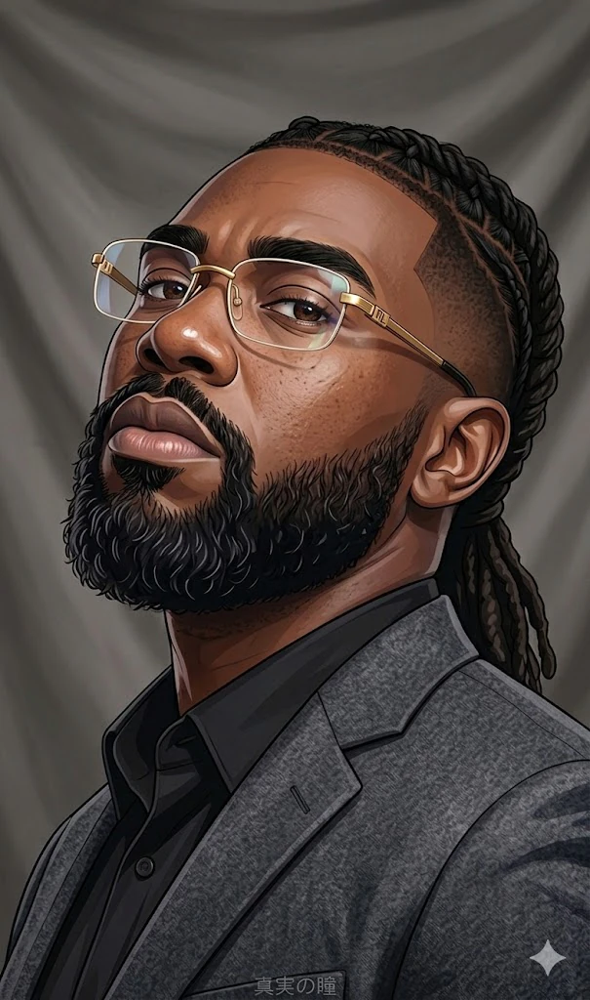

About
It's the result of effective systems, clear direction, and thoughtful iteration.

Hello, I'm Matt.
Creative Director with 10+ years leading visual storytelling and art direction across publishing, webtoon/manhwa, animation, and interactive entertainment, building cinematic visual systems, directing global creative teams, and blending traditional craft with AI-assisted production.
I help teams build stronger worlds, sharper brands, and more effective creative systems by combining visual fundamentals, art direction, storytelling, and emerging technology.
Visual fundamentals
Color theory, composition, lighting, cinematic framing, and action choreography — the fundamentals that make a frame read and a story land.
Art direction & original IP
Original IP, brand and character/world direction, and directing artists toward scalable production — maintaining creative authorship while using AI to accelerate parts of the pipeline.
Creative systems leadership
Raising visual quality, building creative standards, training artists, and translating cinematic shot language into generative prompt language across art, engineering, and operations.
Creative Director
VoyceMe / FableVerse — Remote, CA
Apr 2023 – Present
Art Director
VoyceMe — Remote, CA
May 2022 – Apr 2023
Content Project Manager
VoyceMe — Remote, CA
Feb 2021 – Apr 2023
Scenic Production Lead Animator & Production Manager
Broadway Media Distribution — Fresno, CA
Feb 2017 – Apr 2022
Multimedia Instructor
Carter G Woodson Multimedia Charter School — Fresno, CA
Feb 2017 – Jan 2018
Open to art direction, creative leadership, and AI visual systems work: full-time, contract, or advisory.